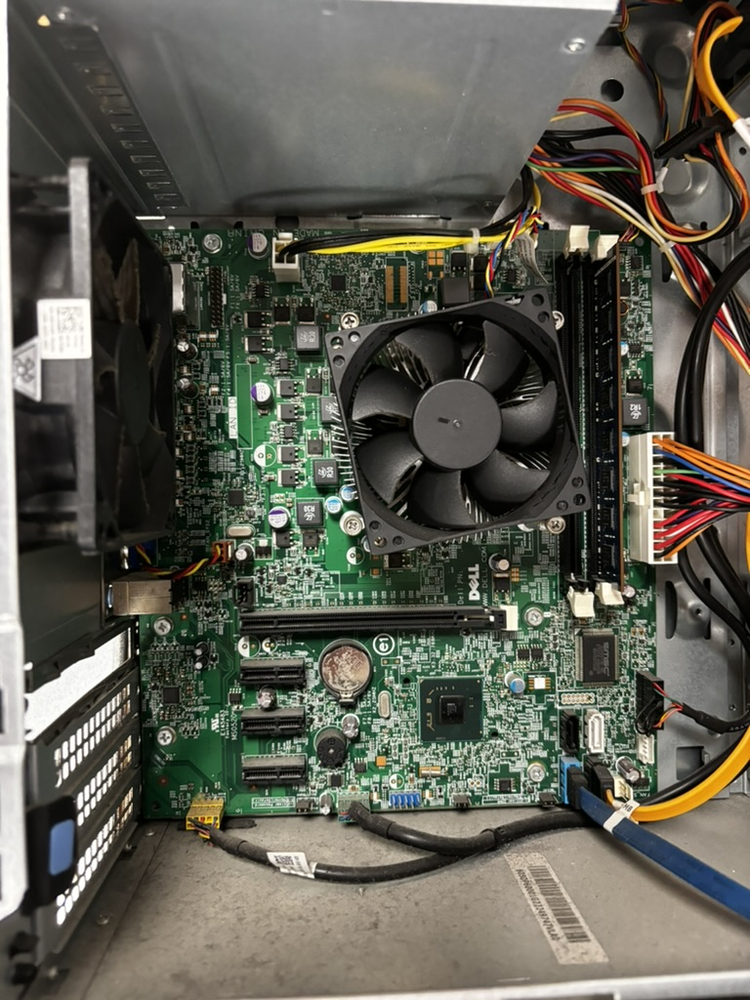
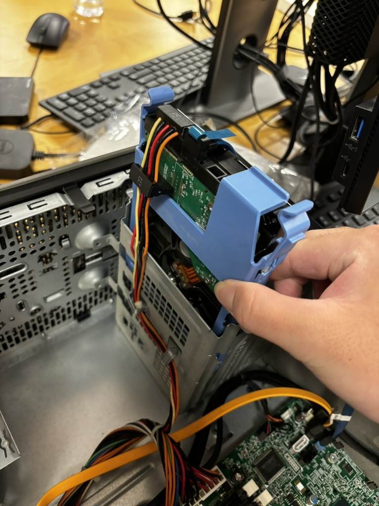
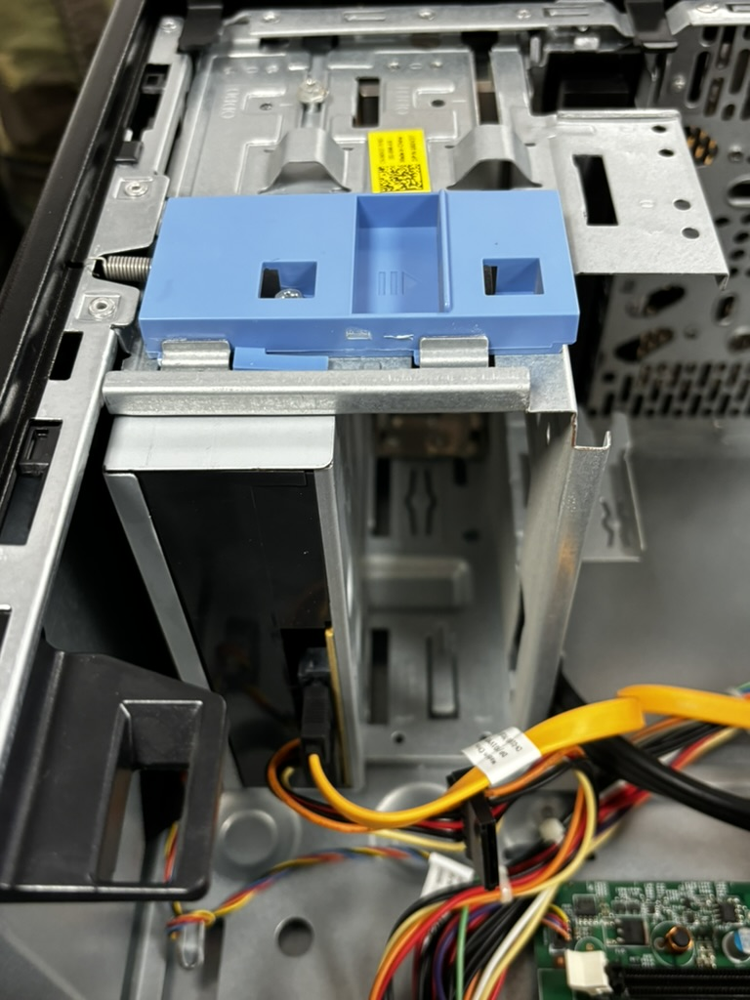
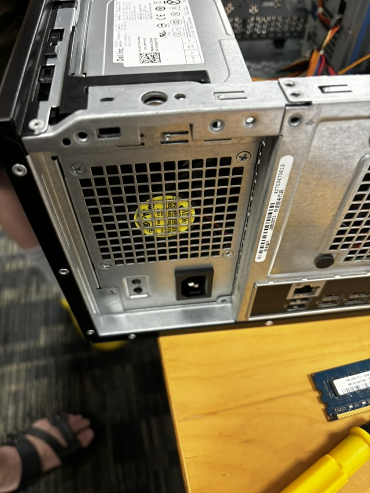
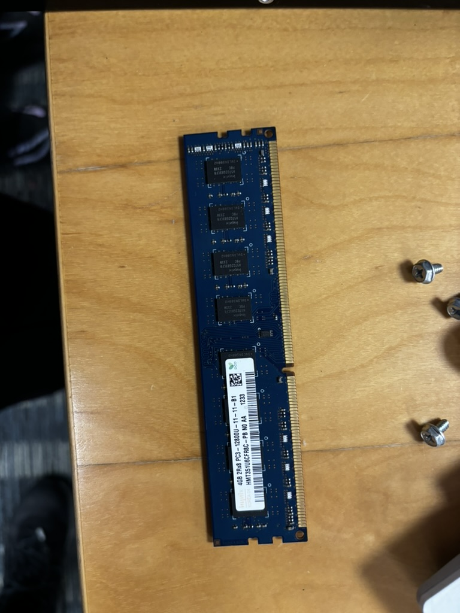
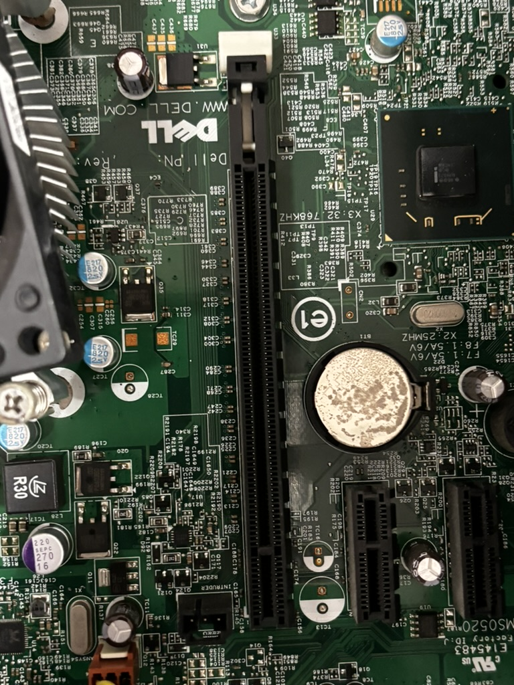
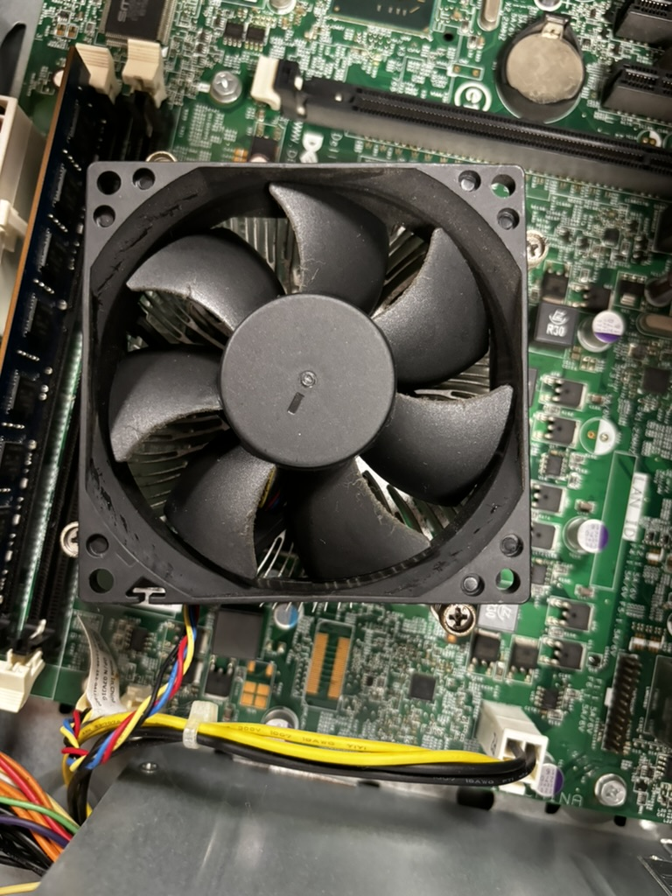
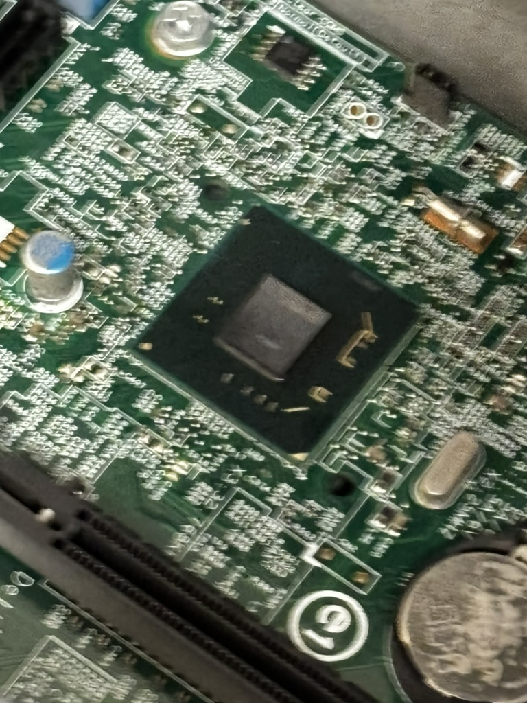
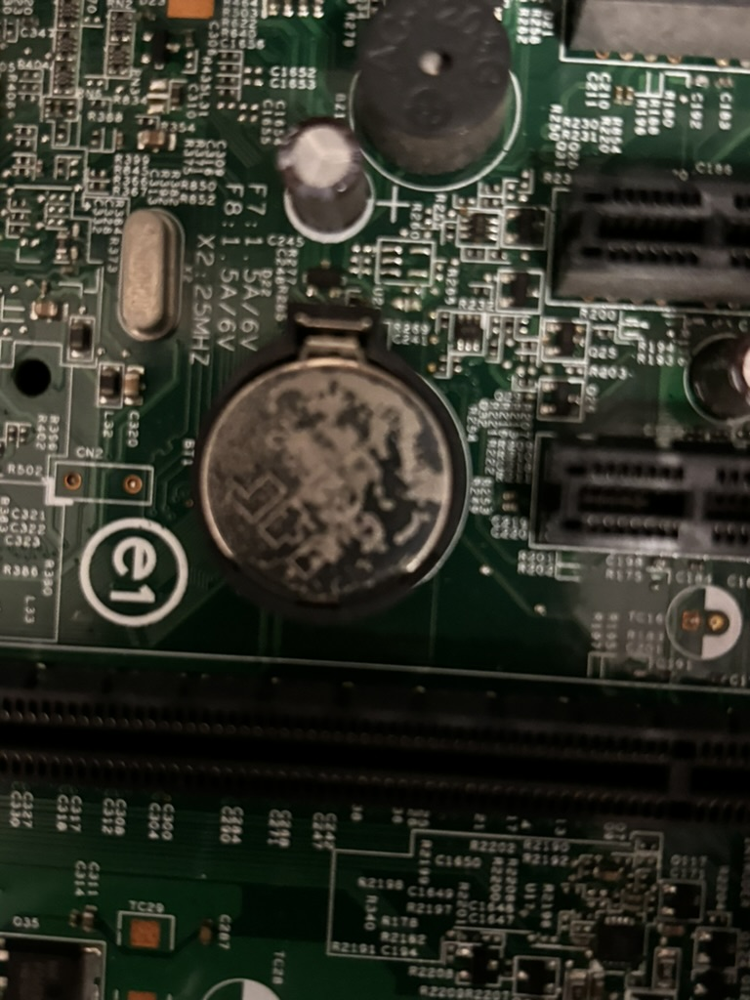
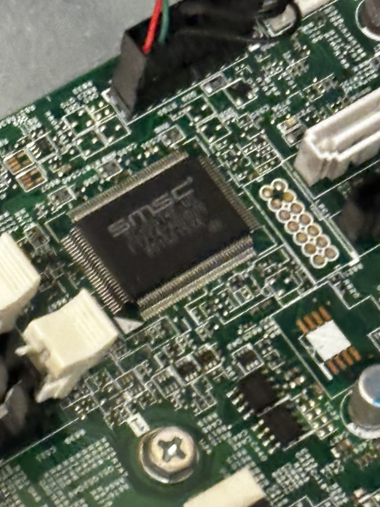

Lab 01
ECE4820 FA2024 Introduction to Operating Systems
518370990004 Jae Heung Park
1 Hardware overview
In the computer
The motherboard

A Hard Disk Drive

An Optical disk drive

The PC power supply

A PCI card
PCI card did not exist in computer disassembled during lab.
On the motherboard
The RAM

A SATA socket

A PCI/PCI-e slot

The CPU

The North and South bridges

The battery

The BIOS

Answer the following questions
- Where is the CPU hidden, and why?
CPU (Central Processing Unit) is located below a fan and heat sink in CPU dismantled during lab. CPU creates a lot of heat during computer is operating, so it is necessary to have a cooling system attached to CPU. Air cooling by fan is universal, but sometimes liquid based cooling system can be used.
- What are the North and South bridges?
North and South bridges are chips only existing in old motherboard chips. North Bridge controls CPU, RAM, internal Graphics Card interaction to be fast South Bridge controls HDD, USB, or PCIs like external VGA.
- How are the North and South bridges connected together?
North & South Bridges are connected through a bus. In motherboard, bus let data flow between these two bridges.
- What is the BIOS?
BIOS(Basic Input/Output System) is a firmware software saved in motherboard chip. After the power is on, BIOS will be launched in computer, initializing CPU and RAM to either start Operating Systems like Windows or Linux, or changing setup.
- Take out the CPU, rotate it and try to plug it back in a different position, is that working?
CPU is specifically designed compatible for only certain type of socket. Thus, CPU will be inserted only in the way it was inserted before. Forcing different position will result in compromising both CPU and motherboard CPU socket.
- Explain what overclocking is?
Instructed in ECE370 Computer organization course, CPU is operating by each clock. More clocks per same time means faster CPU operation, but more consumption of electricity and creation of heat, so that CPU lifespan or even CPU circuit might be compromised if cooling system cannot handle it.
- What are pins on a PCI/PCI-e card and what are they used for?
PCI PCI-e card pins connect PCI card to motherboard by their slots. These pins will let PCI card to interact with data transfer to motherboard. Thus, card and motherboard will communicate. One of the most popular type of PCI PCI-e card are VGA (Video Graphics Array), we call as external graphic cards like Nvidia RTX4090 or GTX1650.
- Before PCI-e became a common standard many graphics cards were using Accelerated Graphics Port (AGP), explain why.
AGP was specifically designed only for fast communication between CPU and graphic card. Before PCI-e, AGP was standard since it had better performance than PCI bus for data interaction with motherboard, but PCI-e performance was better in speed and compatibility, so it replaced AGP.
2 Gitea usage
Register on our git server at http://focs.ji.sjtu.edu.cn/git. We will use Gitea all along the semester. For the various group projects student must use git: part of their grade will be based on their commits. Please closely follow the TAs??instructions and ensure your are fully setup for the rest of the semester. In particular by the end of the lab you should have uploaded your ssh public key on Gitea.
2.1 Git Usage
Basic git usage will be studied in a future lab. In the meantime get familiar with:
- Opening and using issues;
- Simple commands such as clone, commit, push, and pull;
- Using the Wiki and markdown, they will be used for the projects documentation;
2.2 Agile development with Gitea
In ECE482 we expect you follow the adgile development strategy which is adopted by most companies nowadays. If you have any question of need further explanations feel free to ask. Here is a brief summary of the expected Gitea workflow in the course.
3 Command line interface
3.1 Basic Unix commands
3.2 Shell scripting
3.3 Tasks
Answer the following questions, only refering to man pages:
Use the mkdir, touch, mv, cp, and ls commands to:
- Create a file named test.
- Move test to dir/test.txt, where dir is a new directory.
- Copy dir/test.txt to dir/test_copy.txt.
- List all the files contained in dir.
Use the grep command to:
List all the files form /etc containing the pattern 127.0.0.1.
Returned nothing
Only print the lines containing your username and root in the file /etc/passwd (only one grep should be used)
Returns following
/etc/passwd:root:*:0:0:System Administrator:/var/root:/bin/sh
/etc/passwd:daemon:*:1:1:System Services:/var/root:/usr/bin/false
/etc/passwd:_cvmsroot:*:212:212:CVMS Root:/var/empty:/usr/bin/false
Use the find command to:
List all the files from /etc that have been accessed less than 24 hours ago.
Returned nothing
List all the files from /etc whose name contains the pattern ?쐍etw??
Returned nothing
In the bash man-page read the part related to redirections. Explain the following operators >, >>, <<<, >&1, and 2>&1 >. What is the use of the tee command.
Use bash instead of zsh terminal if you are MacOS user.
Simply type bash or zsh to switch.
> Output Redirection
Output Redirection redirect output from command to file. If file already exists, it will be overwritten.
This will generate output.txt file or if it exists, overwrite
it with contents written as Hello Shell!.
>> Append Output Redirection
Append Output Redirection redirect output from command to file. However, this time, command will be appended to originally existing file, instead of getting overwritten.
<<< Here String
Here String provide input to command from string. When using grep,
grep "find this" <<< "input sentence"
First one will return Hello Shell! while the second one
will return nothing.
>&1 Redirect to Standard Output
Redirect to Standard Output will make a file descriptor input to a copy file descriptor 1. Generally, it is standard output.
Both returns
However, former one returns error, while latter one returns output as standard output string.
2>&1> Order of Redirections
Order of redirections will redirect standard output to file.
Formal one returns the following error on terminal.
However, latter one will create file named as nofile.txt as a command file.
What is the use of the tee command.
The tee command will read from standard input and write as standard output.
Former command creates output file first sentence. Latter command adds output file second sentence.
Explain the behaviour of the xargs command
The xargs command will build and execute commands from standard input.
will create and remove file1 file2 file3.
The | pipe operator
The | pipe operator will take output of each command and
apply it as input. For instance,
will return
-rw-r--r--@ 1 jaeheungpark staff 47 Sep 22 15:19 nofile.txt
-rw-r--r--@ 1 jaeheungpark staff 28 Sep 22 15:27 output.txt
-rw-r--r--@ 1 jaeheungpark staff 28 Sep 22 15:28 teefile.txt
What are the head and tail commands? How to ?쐋ive display??a file as new lines are appended?
Head commands display first few lines of file, 10 lines in default.
Tail commands display last few lines of file, 10 lines in default.
If live display of a file is required, type tail -f file.txt,
since -f represents follow.
How to monitor the system using ps, top, free, vmstat?
ps shows currently running processes.
PID TTY TIME CMD
2360 ttys000 0:00.11 /bin/zsh --login -i
2362 ttys000 0:00.49 /Users/jaeheungpark/.cache/gitstatus/gitstatusd-darwin-arm64 -G v1.5.4 -s -1 -u -1 -d -1 -c -1 -m -1 -v FATAL -t 22
3018 ttys000 0:00.02 bash
3189 ttys000 0:00.86 zsh
top shows real time dynamic system process view including
CPU usage and memory usage. Command input top returns
Processes: 659 total, 2 running, 657 sleeping, 3545 threads 15:57:40
Load Avg: 2.13, 1.97, 1.95 CPU usage: 3.19% user, 3.10% sys, 93.69% idle SharedLibs: 765M resident, 149M data, 92M linkedit.
MemRegions: 169888 total, 5315M resident, 502M private, 3869M shared. PhysMem: 17G used (2236M wired, 761M compressor), 359M unused.
VM: 256T vsize, 4915M framework vsize, 0(0) swapins, 0(0) swapouts. Networks: packets: 3661368/5529M in, 2247373/2009M out.
Disks: 1271160/19G read, 399936/13G written.
mode [n]:
PID COMMAND %CPU TIME #TH #WQ #PORT MEM PURG CMPRS PGRP PPID STATE BOOSTS %CPU_ME %CPU_OTHRS UID FAULTS
464 mobileassetd 13.5 00:20.36 7 5 201 14M- 0B 1824K 464 1 sleeping *7+[137] 0.04815 12.17135 0 7653+
0 kernel_task 7.5 24:37.01 576/11 0 0 9040K 0B 0B 0 0 running 0[0] 0.00000 0.00000 0 39329+
1104 clion 7.1 22:43.94 129 6 685+ 1889M- 278M+ 345M 1104 1 sleeping *0[1516] 0.04079 0.00000 501 1150909+
free shows different kinds of memory usage including total,
used, free, shared, buffer, cache, and available memories.
vmstat Shows virtual memory statistics including status of
memory, process, paging, block input, output, traps updated
per input second. For instance, vmstat 1 will update
the output every second.
What are the main differences between sh, bash, csh, and zsh?
sh Shell is original basic shell, with the least amount of features
bash Bourne Again SHell is implemented shell version including
command history, job control, and array.
csh C shell is based on similar syntax to the programming language C.
zsh Z shell is configurable shell with several features from
both bash and csh. Currently shell of my M3 MacBook Pro OS is
using zsh shell.
What is the meaning of $0, $1,?? $?, $!?
$0 Name of script / shell
$1, $2, $3 ... Arguments in order to get passed in script.
$? Exit status of last command. 0 means success while
other numbers represent fail.
$! Process ID of last background command.
What is the use of the PS3 variable? Provide a short code example.
PS3 variable can set prompt for select command in bash. For instance, this is possible.
PS3="Select option: "
select option in "Start" "Resume" "Quit"; do
echo "You selected: $option"
[[ $option == "Quit" ]] && break
done
What is the purpose of the iconv command, and why is it useful?
Purpose of iconv command is to convert text between different
character encodings systems like from ISO to UTF-8.
It is useful when working with files with different systems or
programs that have difference from standard format.
Given a variable temp, what is the effect of:
${#temp}${temp%%word}${temp/pattern/string}?
${#temp} Return string length stored in temp variable
${temp%%word} Remove longest match of pattern word
${temp/pattern/string} Replace first pattern in temp containing string.
Search online (not in the man pages), how files are organised on a Unix like system.
In particular explain what are the following directories used for:
/:Root directory, File System tree root./binBinaries, store basic user commands includingls,mv,cp./bootStore bootloader files like kernel, initial RAM space./etcConfiguration files for OS & Applications/libSystem libraries necessary for OS booting/mediaIf media devices are connected or inserted in computer, OS will make corresponding directory here/mntTemporary mounted files./usr/binUser Binary files for User Applications/usr/shareSharable text files/usr/libUser Libraries required forusr/bin/usr/srcSource codes for Linux Kernel/procVirtual Filesystems with process and kernel info/sysKernel interface with info view and configuration settings/srvData for Services by system like web servers/optOptional packages for subordinate directories/varVariable data including system logging files/sbinSystem binaries required for booting and system restoration/devDevice files representing hardware/vmlinuzCompressed Linux kernel used for booting/initrd.imgInitial RAM space used by kernel for booting
Write a game where the computer selects a random number, prompts the user for a number, compares it to its number and displays ?쏬arger??or ?쏶maller??to the user, until the player discovers the random number initially chosen by the computer.
Execute by command
Code works well.